Em um mundo cada vez mais conectado, proteger a privacidade online tornou-se essencial, destacando a importância da busca pela anonimidade. Diante disso, este artigo tem como objetivo abordar a configuração de um ambiente Windows virtualizado, no qual todo o tráfego é encaminhado através da rede Tor por meio do Whonix-Gateway, garantindo, assim, uma camada adicional de segurança e proteção.
Para isso, será utilizado o VirtualBox, Windows 10 e Whonix.
Conceitos
Virtualização
A virtualização é uma tecnologia que permite criar versões virtuais de recursos computacionais, como sistemas operacionais, servidores ou redes, em um único hardware físico. Ela utiliza um hipervisor para alocar e gerenciar esses recursos, permitindo que múltiplas máquinas virtuais operem de forma independente e isolada no mesmo dispositivo físico.
*Vale destacar que virtualização e conteinerização são conceitos distintos.
VirtualBox
O VirtualBox é um software de virtualização de código aberto desenvolvido pela Oracle, utilizado para criar e gerenciar máquinas virtuais em sistemas operacionais como Windows, Linux e macOS, na qual se tornam hospedeiros para as entidades virtualizadas. Em suma, ele permite que o usuário execute múltiplos sistemas operacionais virtualizados a partir de um mesmo computador físico.
Whonix
O Whonix é um sistema operacional focado em anonimidade e segurança, projetado para proteger a identidade do usuário online. Ele é composto por duas máquinas virtuais: Whonix-Gateway, que roteia todo o tráfego através da rede Tor, e Whonix-Workstation, onde as aplicações são executadas de forma isolada.
Rede Tor
A rede Tor (The Onion Router) é uma rede de comunicação que permite anonimizar a navegação na internet ao encaminhar o tráfego de dados por uma série de nós (servidores) distribuídos globalmente. A comunicação é criptografada em várias camadas, como as camadas de uma cebola, garantindo que a origem, o destino e o conteúdo dos dados sejam protegidos.
Para a criação de sites na rede tor, clique aqui.
Windows
O Windows é um sistema operacional desenvolvido pela Microsoft, amplamente utilizado em computadores pessoais, corporativos e servidores. Ele fornece uma interface gráfica amigável e ferramentas essenciais que permitem ao usuário interagir com o hardware, executar programas, gerenciar arquivos e conectar-se à internet.
Hands-on
Instalação do VirtualBox
A princípio, para a virtualização de todo o sistema, necessita-se da instalação do VirtualBox, utilize o site oficial. Para isso, e escolha o binário de acordo com o sistema operacional instalado em sua máquina física (por exemplo, a opção Windows hosts para usuários do sistema operacional windows).
Na tela de instalação, selecione os componentes padrões recomendados, além de concordar com os avisos de "Network interfaces".
Instalação do Whonix
No site oficial, baixe o Whonix voltado ao VirtualBox.
Em seguida, após o download, abra o arquivo .ova com um duplo clique, e não altere as configurações padrões, além de concordar com a licença de uso do software. 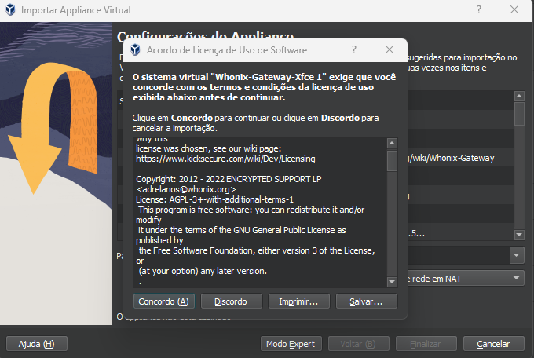
Após a importação, espera-se ter duas novas intâncias no Virtual Box (Whonix-Gateway-Xfce e Whonix-Workstation-Xfce).
Em seguida, inicialize ambas as máquinas. A princípio, ambas as instâncias fazem o systemcheck, a fim de validar a instalação. 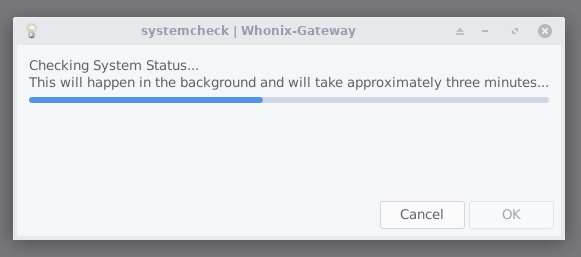
Logo depois, nas mensagens de aviso, selecione OK. No Whonix-Workstation, abra o navegador e acesse o site https://check.torproject.org/ , na qual valida a conexão com a rede tor. Após essa ação, desligue ambas as máqunas virtuais. 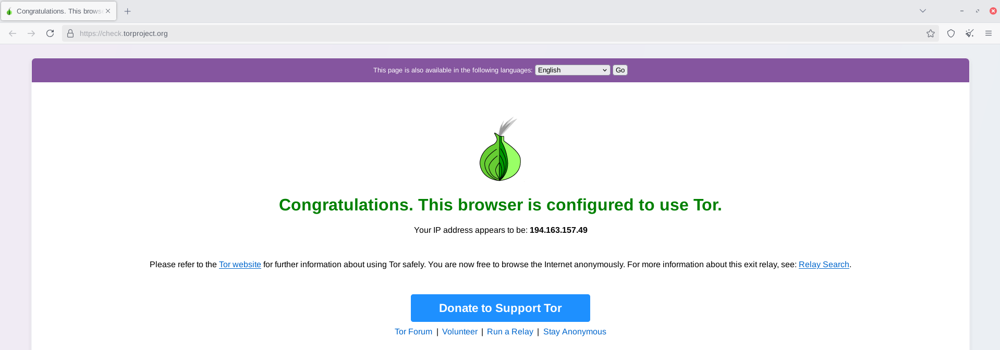
Instalação do Windows
No site oficial, baixe o Media Creator Tool, da Microsoft.
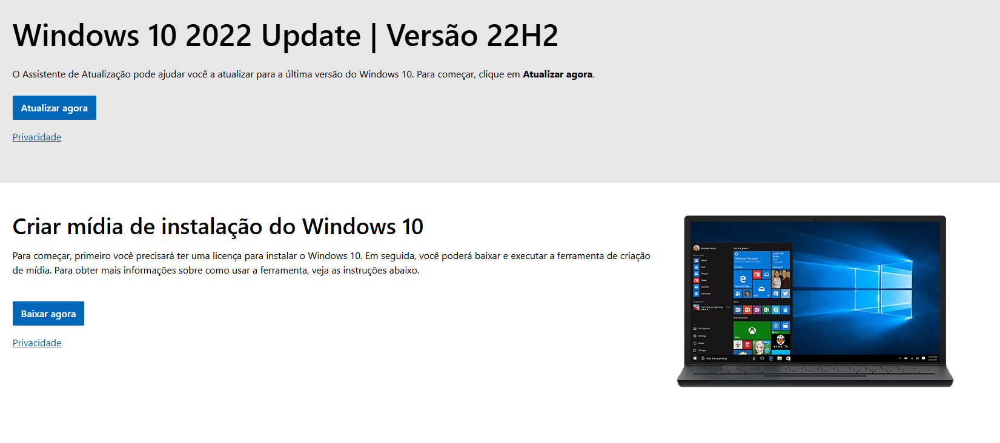
Posteriormente, com a ferramenta inicializada, opte por baixar a ISO do Windows. 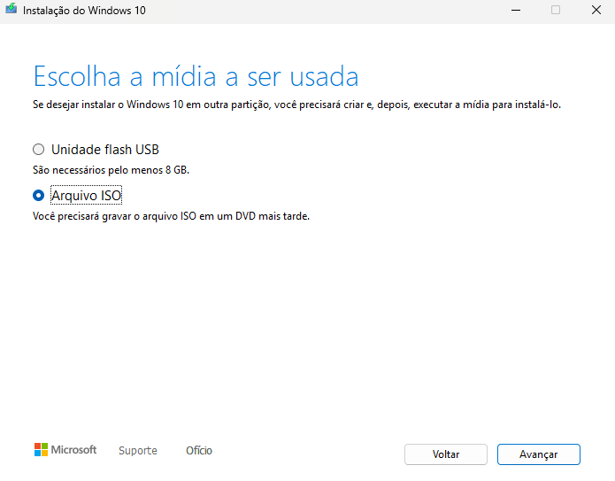
No virtualBox, crie uma máquina virtual com a ISO do Windows 10 recém baixada. 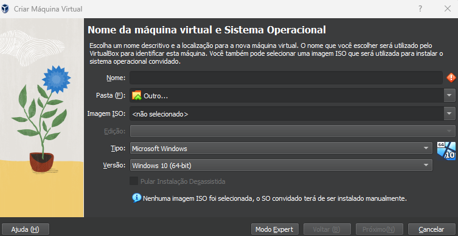
Em seguida, prossiga com a instalação de forma convencional. 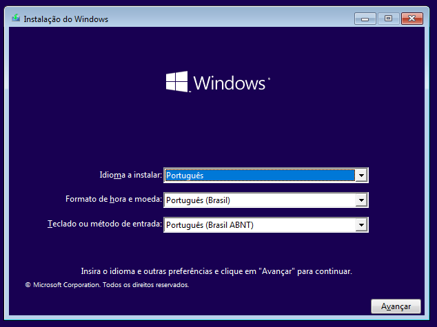
Conexão Windows 10 - Whonix
Após a instalação do Windows na máquina virtual, além da devida atualização dos drivers e do sistema operacional, desligue a instância. No menu do virtual box, na máquina recém criada, opte por "Configurações", e busque por "Rede". Nesse momento, selecione "Rede Interna".
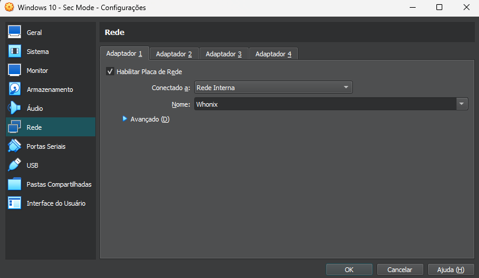
Após a configuração anterior, execute, primeiramente, a instância Whonix Gateway. Em seguida, após sua inicialização completa, ligue a máquina virtual Windows. 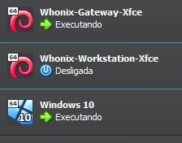
Ao inicializar o Windows 10, no painel de controle, opte por Rede e Internet > Central de rede e compartilhamento > Alterar as configurações do adaptador. Ao clicar com o botão direito em Ethernet, selecione Propriedades 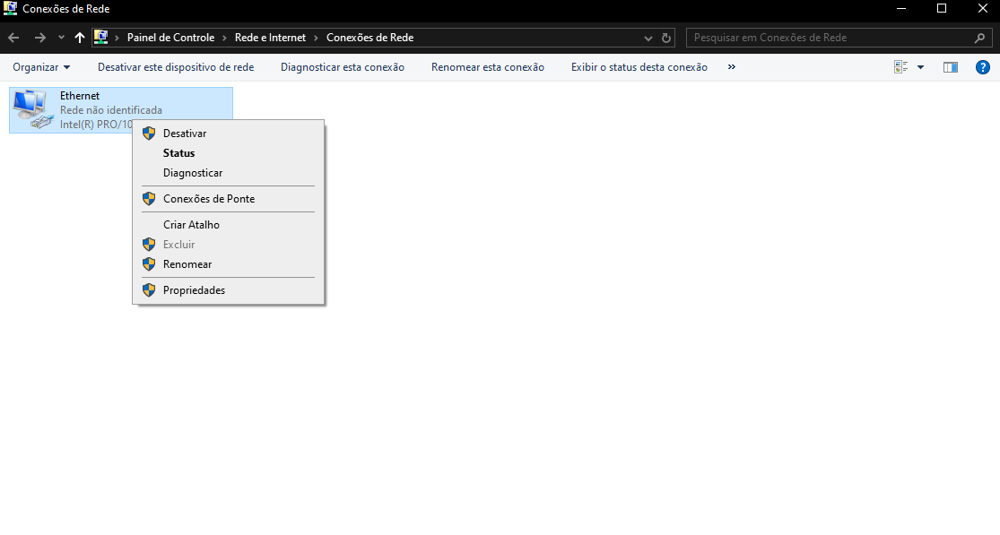
Em seguida, busque por Procolo IP Versão 4 (TCP/IPv4). Ao encontra-lo, selecione Propriedades 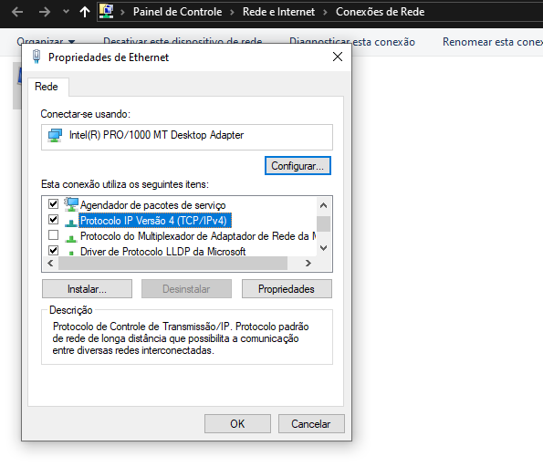
Por fim, selecione Usar o seguinte endereço IP, e opte por:
Endereço IP: 10.152.152.100
Máscara de sub-rede: 255.0.0.0
Gateway padrão: 10.152.152.10
DNS preferencial: 10.152.152.10
Logo depois, clique em OK para salvar
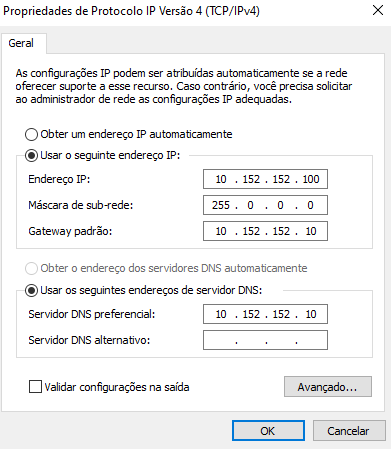
Teste de conexão
A fins de validação, no navegador, acesse https://whoer.net/. Caso todas as etapas anteriores tenham sido concluídas com sucesso, o retorno da análise do site acessado será um IP pertencente à rede Tor.
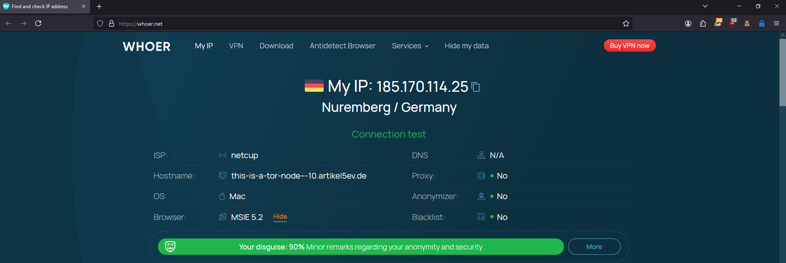
Com isso, obtêm-se um ambiente Windows na qual todo seu tráfego é passado pela rede tor, de forma nativa.
Extras
- A utilização de VPN no sistema operacional principal (host) pode ser extremamente eficiente, a fim de adicionar uma camada extra de anonimidade além de evitar que o provedor de internet identifique o uso constante do Tor;
- O uso de extensões voltadas a privacidade são grandes aliadas para a busca pela anonimidade, como: Privacy Badger, Smart HTTPS, uBlock Origin e User-Agent Switcher and Manager;
- Perante o cenário nacional, recomendo a leitura da obra OPSEC, Inteligência Cibernética na Prática, do autor Vinícius Vieira.